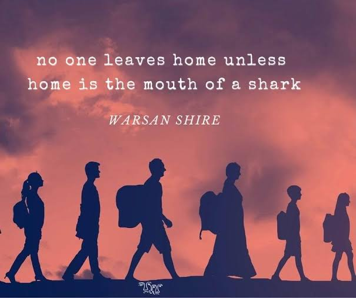

English
Conversation practice • Test preparation
We are a global learning platform created to support refugees in accessing education, developing new skills, and exploring future opportunities.

01 / WHO WE ARE
Not starting over alone. Starting something together.
We connect refugee learners with experienced teachers and dedicated volunteers from around the world. Whether you want to learn a new language, prepare for a language proficiency test, or explore your next steps in education and employment, we are here to help you move forward.
Get to know HIND02 / AVAILABLE LANGUAGES
We connect refugee learners with teachers and volunteers who provide language-learning support in a welcoming and supportive environment.
Conversation practice • Test preparation
Conversation practice • Test preparation
Conversation practice • Test preparation
Conversation practice • Test preparation
Develop your speaking, listening, and everyday communication skills with the support of teachers and volunteers.
03 / GET INVOLVED
Whether you're looking for learning support or hoping to volunteer, we'd love to hear from you.